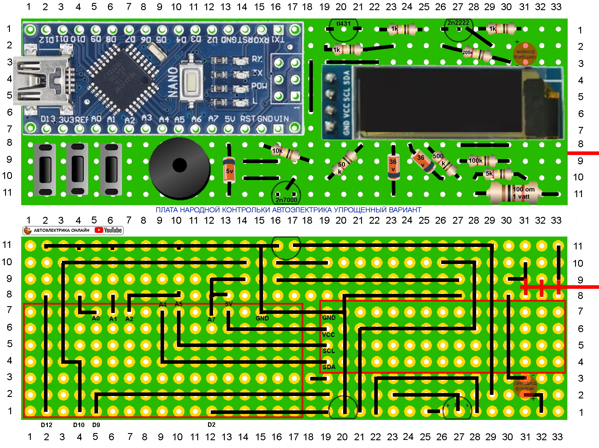

Сайт в разработке!
Что то может устарело или гдето ошибки это нормально!
Старый сайт с актуальной информацией Перейти
Схема контрольки
Электросхема контрольки и описание

На рисунке схема контрольки, она достаточно простая что благотворно скажется на сборке особенно для начинающих, так же компоненты на схеме распространенные и не дорогие.
Сборка на макетке
Сборка контрольки на макетной плате
Контролька собирается на макетной плате (размеры и количество отверстий дано на рисунке) для того чтоб каждый мог повторить ее не вдаваясь в изготовление или заказ печатных плат. Потом на сайте размещу провереные печатные платы для сборки как с выводными компонентами так и с CMD компонентами. Так же контролька все еще находится в стадии усовершенствования и что то может поменятся на макетке это сделать не сложно, а на печатной плате будет затруднительно. На рисунке плата которая разработана под корпус шприца 20 кубов, ее сборка не сильно сложная, пайка лишь усложняется тем что детали перекрываю дорожки и пр. , думаю сделать более простую версию где ничего не будет перекрыватся и в любой момент можно будет чтото подправить но тогда с корпусом придется самим чтото придумать, можно 3д принтер использовать или склеить из чего либо, да хоть папье-маше :).
Сборка на макетке упрощенная
Упрощенная сборка для тестов и начинающих
ПОКА НЕ ПРОВЕРЯЛАСЬ ПЛАТА, ГАРАНТИИ ЧТО ЗАРАБОТАЕТ НЕТ.
Упростил плату теперь не надо при сборке чередовать последовательность впайки компонентов, можно паять откуда угодно, например можно запаять ардуино и дисплей и проверить работоспособность, далее запаять кнопки и проверить как они нажимаются и так далее, так же если нет некоторых деталей можно паять так, а потом когда детали появятся добавить, так же плата более ремонтопригодна так как не надо снимать дисплей али ардуино чтоб чтото там подпаять, заменить. Советую начинать с нее особенно когда все проверится. Плата кажется сильно шире предыдущей но это не так, она стала короче от этого такой эффект. На счет корпуса тут все идивидуально хоть клеить из листов, хоть 3д принтер, хоть папье-маше, хоть термоусадка сами решайте.
Питание контрольки
Простая схема для питании контрольки в автомобиле.
Питание контрольки может быть разным но я предложу свой проверенный вариант который советую всем, как видно на схеме нужно всего 3 детали это стабилизатор и пару конденсаторов, все затягивается в термоусадку и получается небольшое утолщение на проводе перед крокодилами. Данная схема подходит как для работы с грузовиками где напряжение 24-28 вольт и с легковыми авто с напряжением 12-14 вольт, данный преобразователь при работе греется не сильно ведь ток потребления контрольки 30 милиапер (как у хорошего светодиода).
Вам не надо беспокоится о разряде аккумулятора, о том что на морозе или жаре акб испортится, а так же литиевые акб склонны к возгоранию так что советую данную схему как самую простую, доступную и недорогую.
Некоторых жанная схема напрягает тем что придется всегда подключатся к аккумулятору автомобиля и работать с удлинителем, но у удлинителя много преемуществ: у вас всегда честный плюс и минус, а значит все показания которые вы собираете правильные, так же удлинитель позволяет подать питание куда либо например на моторчик стеклоподъемника напрямую и проверить его, также удлинитель если он нетолстый играет роль защиты и нагрузки, 0.75 квадрата замкнутые потребляют 30 ампер что можно использовать для диагностики, замкнутый удлинитель будет грется секунд 15-20 прежде чем начнет плавится так ловите лайфхак :), бросить удлинитель занимает 1 минуту, а если вы сняли неточные показания оттолкнувшись от ржавой железки может работу затянуть и на пол дня.
Кнопки в корпус
Чертеж кнопок для корпуса из шприца 20 кубов.

На рисунке даны размеры кнопок для корпуса из шприца 20 кубов, кнопки клавишные очень хорошо подходят под данный корпус. Изготавливаются из пластика, можно взять корпус от игрушек, блоков питания, корпусов телевизоров и пр. главное чтоб пластик был жесткий. Выпилить можно пилкой по металлу и подогнать наждачной бумагой или надфилем, но лучше использовать бор машину (гравер) им довольно быстро все делается(стоят они недорого и для тех кто своими руками чтото делает незаменимая вещь, в автоэлектрике тоже кстати пригождается часто). Осью служит игла от шприца ей же и сверлим отверстия, игла острая и сверлит хорошо, самое главное что после сверления отсутствует люфт на оси, далее откусываем иглу так чтоб она немного цепляла стенки шприца и все, кнопки нажимаются на удивление хорошо, и переставить в другой корпус дело 1 минуты так как корпус никак не подгоняется, ни клеить ни закреплять как то нечего не надо, все дежится нза счет распорок зацепа за кнопки и пищалки что все не ушло в корпус. Размеры у вас могут немного отличатся, если пищалка стоит дальше что лучше то и зацеп делайте больше сильного зазора не должно быть. Ниже будут фото кнопок и видео работы.